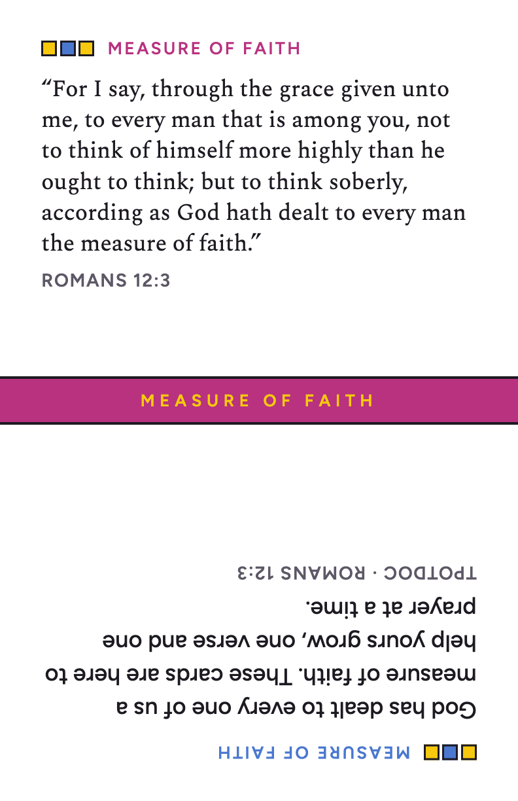
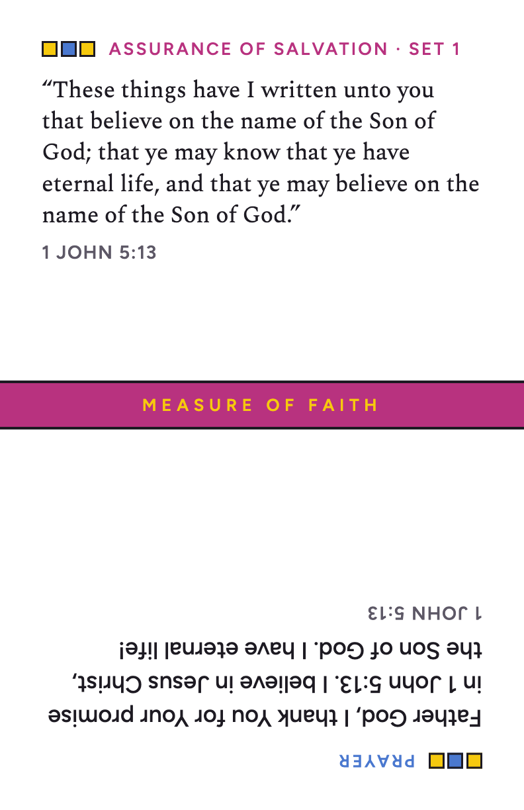
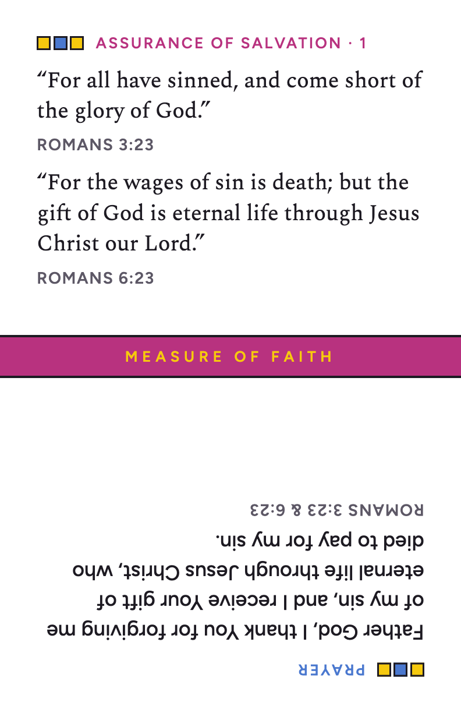
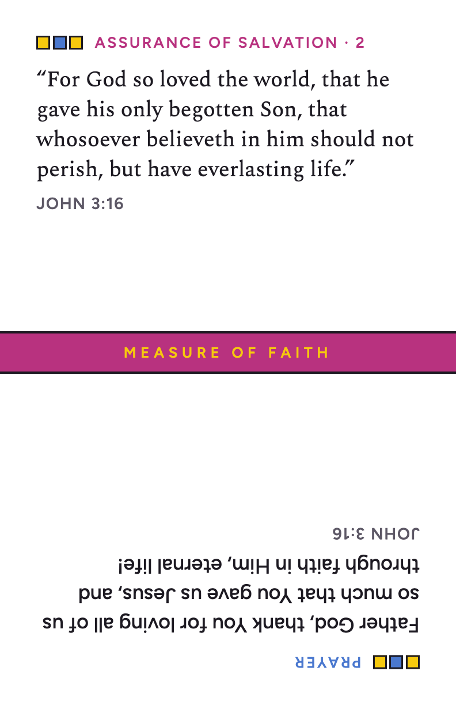
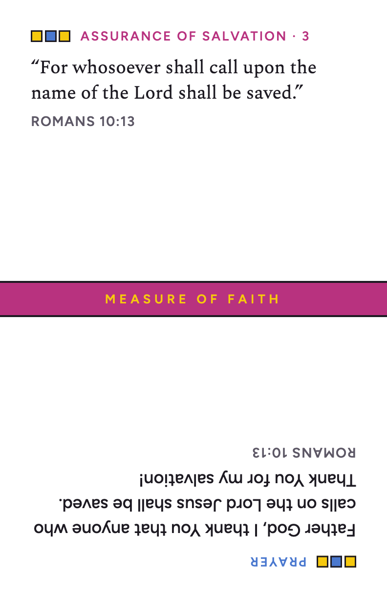
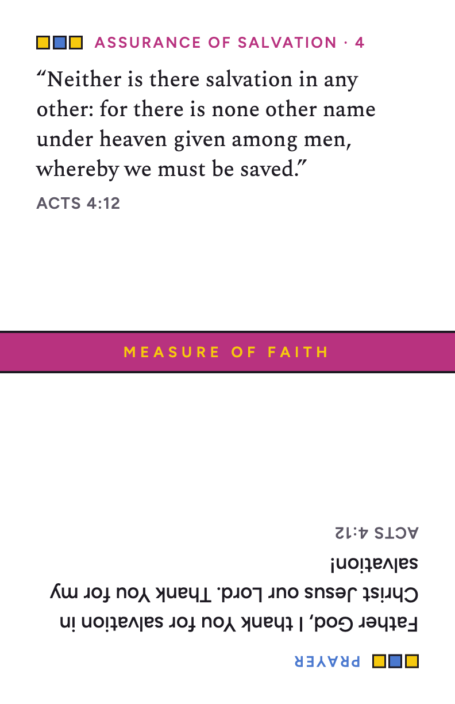
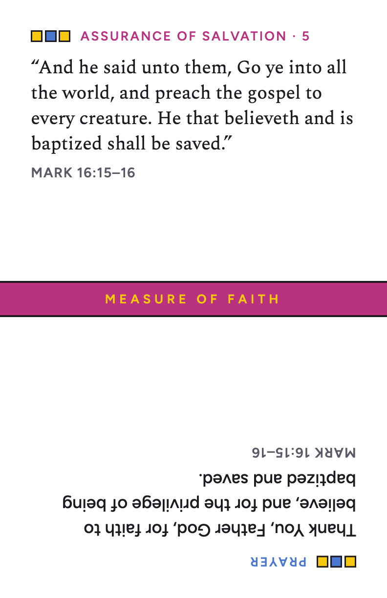
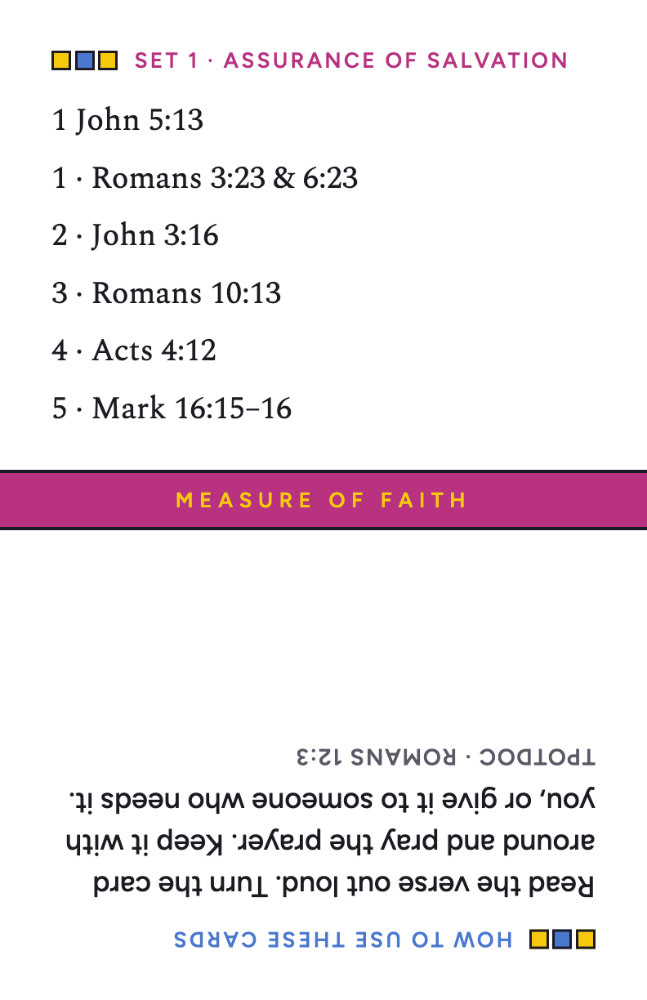

Printables · Measure of Faith
Measure of Faith cards
“According as God hath dealt to every man the measure of faith” (Romans 12:3). Each card has a verse on one end and a prayer on the other, so you can read it from either side. Set 1 is about the assurance of salvation.








Print sheet (PDF)
Letter-size card stock, 8 cards per sheet. Cut on the dashed lines.